Climate Change
Created Friday 29 November 2019
@time @FOPG @GEOGRAPHY @YEAR1
Causes of climate variation
Transition from one @climate to another (moving to a different place)
The middles of continents are generally dry and arid because the most rain falls on the coast → deserts in the middle of continents
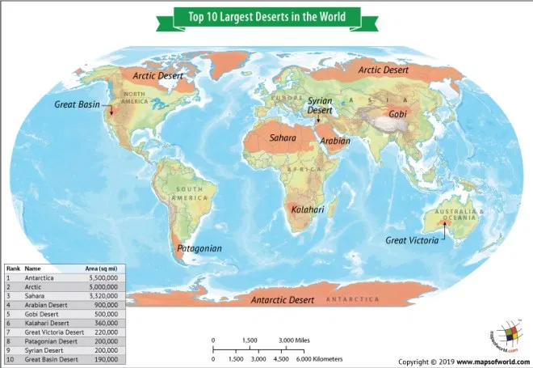
Carbon
@carbon doesn't directly cause global warming. Warming comes from the amplifications of the initial warming.
Scale
How you are @measuring climate variation depends on the @scale you measure it at:
- There are huge climate differences across America
- There is lots of variation in rainfall across @scotland (but it all falls in one climate bracket)
- Like Steady and Graded time
Things that impact regional climate:
- Ocean circulation in gulfs
- Atmospheric circulation (which side of the @jet_stream you're on)
- Latitude (impacts the amount of @radiation you recieve)
Things that impact global climate
@Atmosphere composition
Arrangement of the continents
See tectonics and climate
The Younger Dryas
- @Younger_Dryas = return to glacial period ~20,000 ago, reversing the warming after the end of the last glacial maximum
- Extreme rapid reversal of @climate
- Seen in marine record and ice cores
Last 1000 years
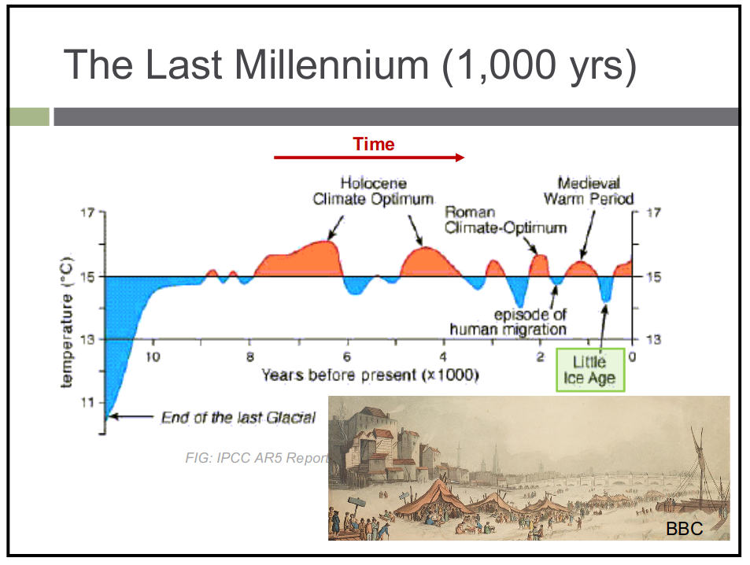
@holocene_climate_Optimum : known expansions of society
@medieval_warm_period: lots of development
Points in the @holocene where there was ~1.5 degrees warming
Little Ice Age
Frost fairs
*causes
Preindustrial time = before 1850
1850= introcuction of humans into system
Humans
@human
↑ land air temperature
↑ Sea surface temp
↑ marine air temp
↑ sea level
↑ Summer arctic sea ice extent
Natural variability →very hard to know what is causing @climate change
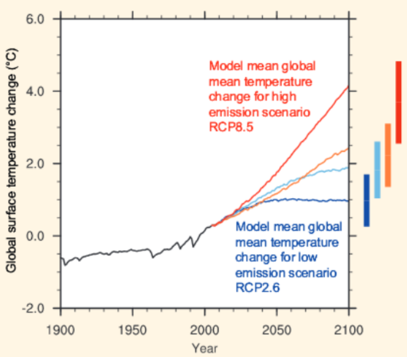
We are predicted to go along the red line (but the blue with the paris agreement)
Regional patterns of T
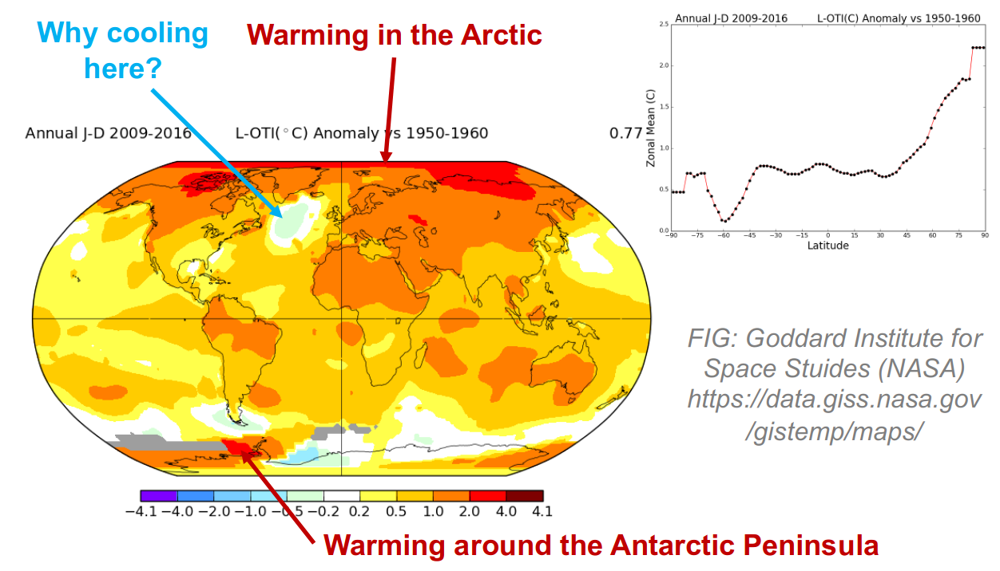
Cooling patch ∵ melt from greenland
→ artificially cools us
→ freshwater into saline changes circulation patterns
*Goddard institute Nasa
Natural Causes
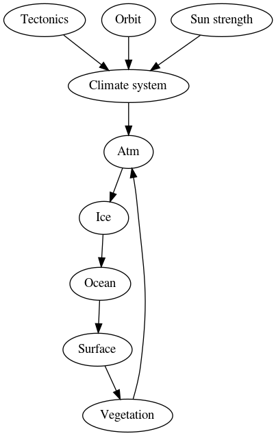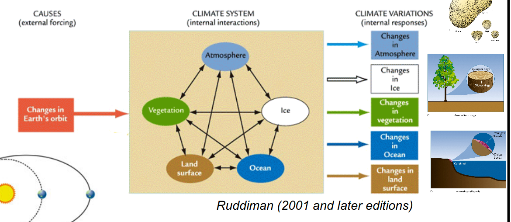
- @atmosphere can only hold heat while cloudy = @dynamic_equilibrium
- 80% of heat stored in ocean
- Ocean heat changes take 1000s of years
- Ice only takes hours
Orbital forcing
@Milankovitch cycles:
- @eccentricity = shape of orbit around planet on a 1000 Ka cycle
- @Obliquity = tiny changes in tilt on 40Ka cycle
- @Precession = variation in latitude that @sun comes in
@panama_gap closure → Atlantic completely closed to circulation
Water cycle
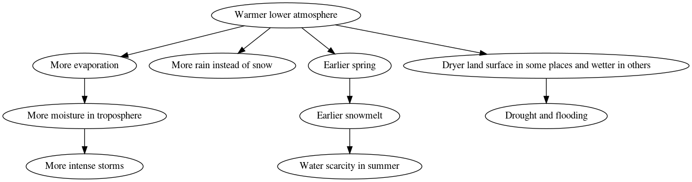
Climate Change Hazards
@hazards
Ice dammed lakes are becoming more unstable as the climate warms, making nearby communities vulnerable
Tectonics on climate
@tectonics
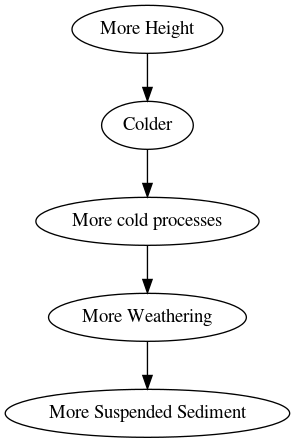
- Suspended sediment = sediment carried in river discharge
- 70% of @rivers load that flows into the @oceans comes from only 10% of the land on Earth.
Volcanoes vs Climate
Sulphate particles released from volacnic erruptions have a minor global cooling effect due to the increased @albedo
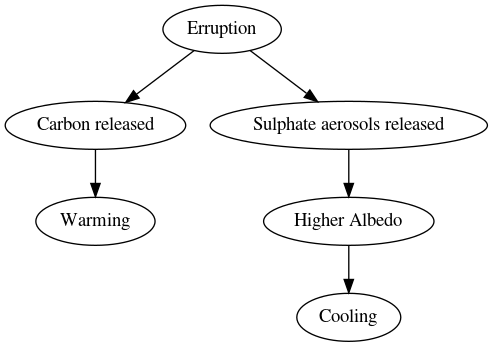
The balance of the gases/ @aerosols released determines what happens to the climate
More aerosols in the @atmosphere cause less light to reach the surface
- The eruption of Mt @Pinatubo in 1991 released enough aerosols to cool the climate for 3 years
- Mt St Helens was just as big an erruption but it was a lateral erruption, → lower ash cloud → less effect than @iceland 2010
- Volcanoes may have caused the Little Ice Age @Little_Ice_Age
Continental Arrangement
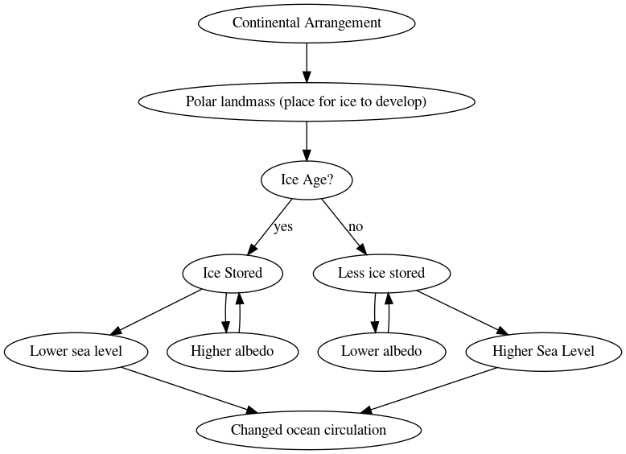
Ice sheets need a landmass to form over
Continental Arrangement vs Ocean Circulation
- Clousure of @panama_gap changed the amount of moisture reaching the arctic and is said to have sent the northen hemisphere into glaciation, but this had already begun before the closure.
- Panama Gap created the gulf stream when the @Central_American_Seaway was sealed.
It was the build up of @sediment that sealed the gap between the new volacnic islands
Topography
Mountain Ranges
Cause land to rise above the @snowline
Deflect weather systems: the @Tibetan_Plateau directs @monsoons in South East Asia to monsoon areas and keeps other areas dry.
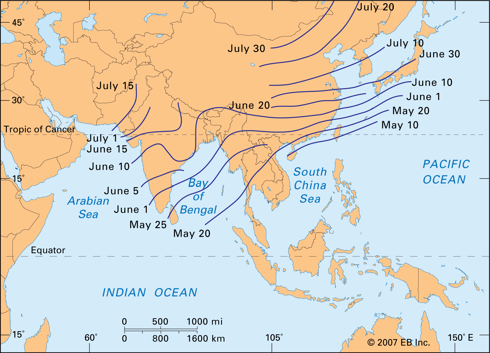
Uplift
@morphology
Chemical @weathering leads to lower levels of  in the atmosphere
in the atmosphere
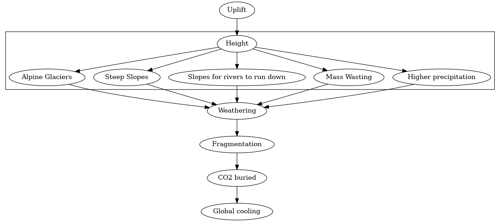
Backlinks: Home:Fundamentals of Physical Geography:Systems